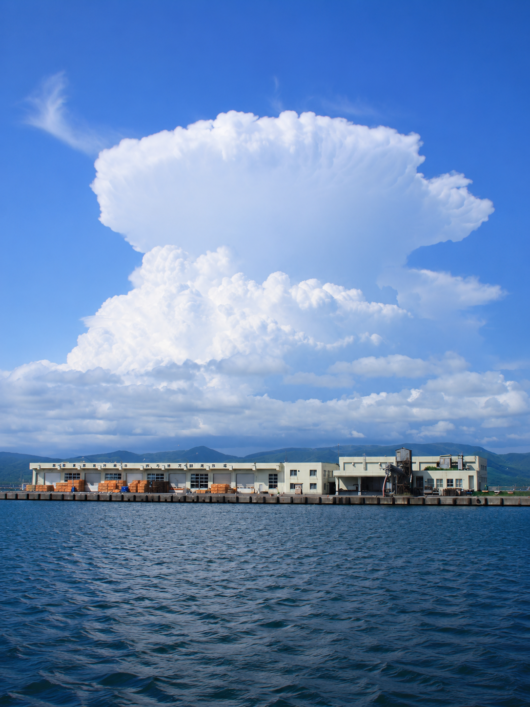
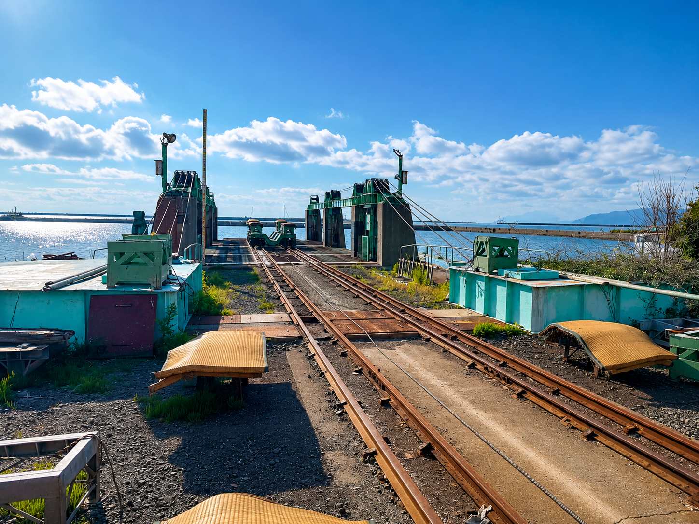
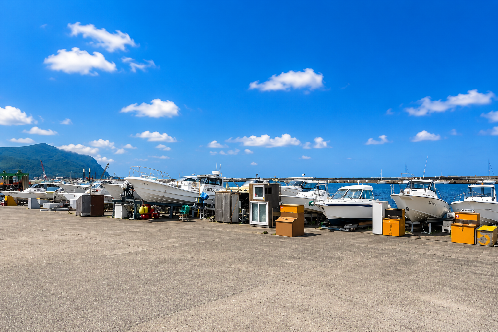
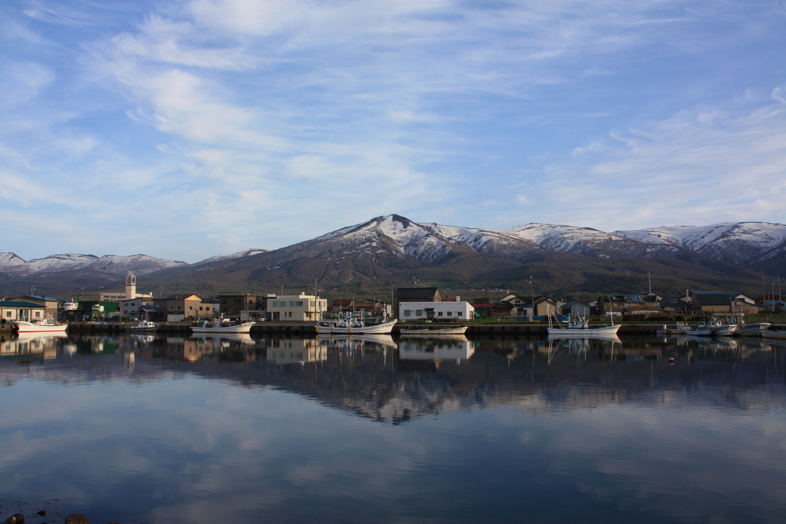
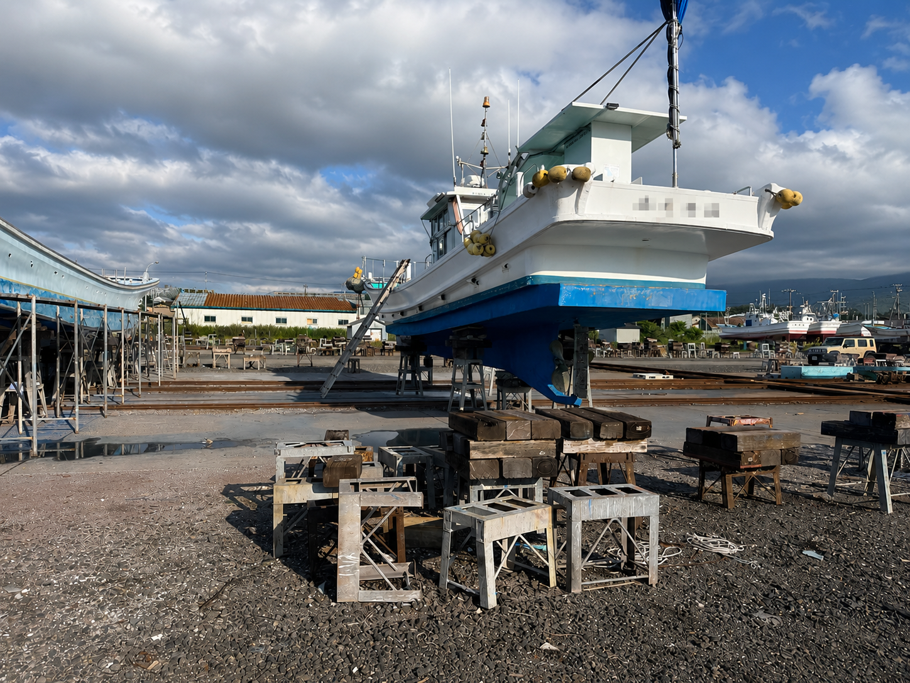
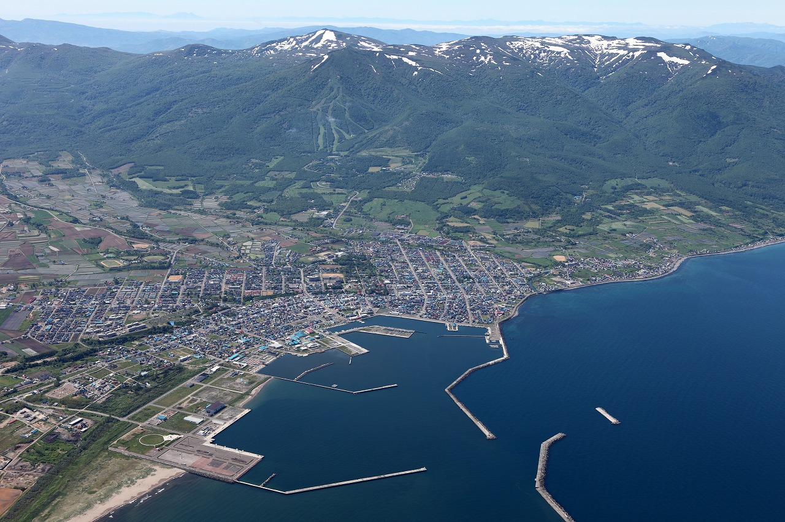

岩内地方船舶上架公社は、北海道岩内港に位置するリフト式船舶上架施設です。 船舶の上架・下架作業を通じて、安全な船舶運航を支えています。
船体点検や整備作業、越冬保管など、船舶の維持管理に必要な環境を提供し、地域の漁業やマリンレジャーをサポートしています。
当施設ではリフト式上架設備を採用しています。 船体への負担を抑えながら安全かつ効率的に上架・下架作業を行うことができます。
船体洗浄、船底点検、整備作業など、船舶の維持管理に必要な作業にご利用いただけます。


プレジャーボートのご利用は年間契約制となっております。 陸上保管や日帰り利用など、利用形態に応じてご利用いただけます。

漁船の上架・下架、船体点検、整備作業などにご利用いただけます。 岩内港だけでなく近隣港湾からのご利用も歓迎しております。

船舶の上架・下架、船体洗浄、船底点検、越冬保管、プレジャーボート陸上保管などにご利用いただけます。
岩内港は漁業・海洋レジャー・観光の拠点として、多くの人に親しまれています。

岩内港は北海道西部、日本海沿岸に位置する港湾です。 漁業活動やマリンレジャーの拠点として利用されており、多くの船舶が発着しています。
背後には積丹半島の山々が広がり、四季折々の景観を楽しめる港として親しまれています。
当施設は港内に位置し、船舶の維持管理を行うための利便性の高い環境を提供しています。